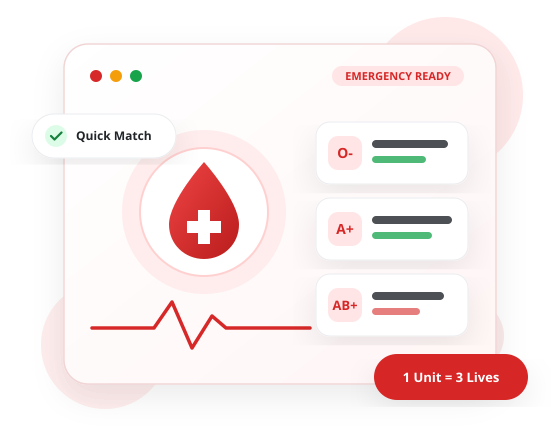

01
Register or Search
Voluntary donors sign up with their blood group, city, and availability, while families filter matching donors instantly.
Connect with verified voluntary blood donors in your city during critical medical emergencies. Search by blood group, submit urgent requests, or register as a life-saving donor in minutes.

Select any blood group below to filter matching donors in our directory immediately.
Designed for clarity and speed when every minute matters for patients and families.
Voluntary donors sign up with their blood group, city, and availability, while families filter matching donors instantly.
Filter donors by exact blood group and city or post a prioritized blood request with hospital details and required units.
Send privacy-protected contact requests and track donation readiness directly from the interactive donor dashboard.
Thoughtfully crafted to make emergency donor discovery fast, dignified, and accessible on any device.
Combine blood type, city name, and real-time availability status to narrow down eligible donors in seconds.
Donor phone numbers and emails are never exposed publicly. Requests are initiated through structured contact forms.
Emergency blood requests support Critical, Urgent, and Standard triage tiers so urgent cases stand out immediately.
Dedicated Donor and Admin dashboards manage availability toggles, donation history, and active blood requests.
Illustrative healthcare metrics demonstrating platform scale and emergency readiness.
Sample testimonials illustrating how timely blood donor coordination supports hospitals and families.
"When my father needed two units of O- blood late at night, filtering by city and availability helped our family connect with willing donors quickly and calmly."
"The donor dashboard makes it effortless to update my availability after every donation and keep track of my donation dates without sharing my phone number publicly."
"Having emergency priority tags and blood group filters in one clean interface streamlines how coordinators verify compatible donors during urgent cases."
One voluntary donation can help save up to three lives. Submit a demo request or join our donor list today.